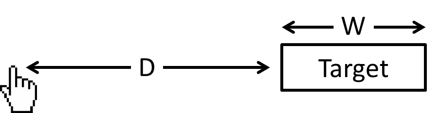

# Buttons Note: Make sure keycasting and recording is up. Open test buffers in vscode and sublime. Open an application that needs closing.
<h3>The power of buttons</h3> </img> <aside class="notes">Fighting games taught me the power of buttons. You stand there like punch punch crouch punch, and the other person throws stuff like this.</aside>
### Clicking the save icon Note: When last? We know thats not efficient. So we already know that buttons are powerful. Saving, opening, quit. Thats 3. What are we doing with the rest of the buttons?
Fitts' Law

### Quick mafs (keys \* modifier_combinations) (100 \* 16) Note: Controllers have 14 buttons and 2 analogs, 100 key layout, 4 modifiers (16 combinations)
<h3>Programming is a craft</h3> <aside class="notes">Every craft has its tools. Think of yourself as a craftsperson, and what tools you use. Which tools are useful? How well do you know your tools? Im going to distinguish tool from software, im defining a tool as an action, ie. Swapping two lines</aside>
<h3>Beginner level (Learn)</h3> <aside class="notes">Get to know your tools. Learn as much of it as you can. Learn as many shortcuts as you can. Learn the defaults. (Note about learning the editor). Keybindings for the things you need a mouse or a menu to achieve </aside>
<h3>Add tools where necessary</h3> <p>(Spectacle, iTerm, Sublime)</p> <aside class="notes">Mac OS maximizing is broken. Snap left, snap right? (Expose up and down, quit from cmd-tab) (iterm - splits, switching tabs with Cmd-Shift-[, fuzzy finding with CtrlR) (Sublime Cmd-D, Cmd-Shift-L, Cmd-Ctrl-up/down)</aside>
<h3>Intermediate level (Create)</h3> <aside class="notes">Sometimes our tools are close but not quite. Dont be afraid to override defaults you dont use</aside>
<h3>Bring your frequent actions closer</h3> <aside class="notes">Sometimes our tools are close but not quite. Dont be afraid to override defaults you dont use. Operations where the defaults are not memorable (tmux panes, windows, sessions) (fish aliases abbreviations - completion benefits)</aside>
<h3>Advanced level (Optimize)</h3> <aside class="notes">Sometimes our tools are close but not quite. Dont be afraid to override defaults you dont use. Operations where the defaults are not memorable (tmux panes, windows, sessions) (fish aliases abbreviations - completion benefits)</aside>
<h3>Opinionated. Doesnt exist out of the (tool)box</h3> <aside class="notes">You know exactly what you want. Opinionated. Doesnt exist out of the (tool)box. You steal things from other boxes, and you take your box everywhere). Choose your defaults (youve probs written everything you need at the moment). </aside>
<h3>All levels</h3> <ul> <li>Share</li> <li>Build over time</li> <li>Keep optimizing</li> </ul> <aside class="notes">Share them with others. Theres nothing more mind blowing than seeing someone do something faster than youd imagined was possible. Anyone with dotfiles will tell you why you want to take your setup wherever you go.</aside>
<h3>Beginner</h3> <ul> <li>Learn the defaults</li> <li>Use the buttons</li> <li>Keep optimizing</li> </ul> <aside class="notes">Pick a thing, use it.</aside>